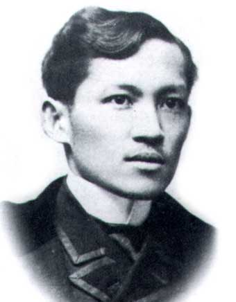

 Rizal’s primary goal in leaving at 1882 was to complete his education. After Jose Rizal’s fourth year in medical studies in Santo Tomas, the University of Higher Learning in the Philippines whom Rizal was disgusted of its primitive method of instruction and the racial prejudice of Dominican Professors against Filipino students, he was brought to realization that pursuing further studies abroad will be much better.Jose Rizal was 21 years old when he landed his foot in Spain. He wanted to study Law but Paciano convince him to study medicine or fine arts instead.
He studied painting and sculpture in Academy of Fine Arts of San Fernando and passed all subjects leading to the degree of Doctor of Medicine and finished his studies in Philosophy and Letters with higher grades. He was awarded the Degree of Licentiate in Philosophy and Letters by the Universidad Central de Madrid on June 19, 1885. He enrolled in a university in November 3 1882 and was conferred the degree of Licentiate in Medicine by the Universidad Central de Madrid on June 21, 1884. He took courses in History, Spanish and Greek Literature, Hebrew, and Arabic. According to Rizal's Spanish biographer Wenceslao Retana, he excelled more in philosophy and letters rather than in medicine.
One of his goals is to make a name for himself in the realm of journalism. Example of his writings are ELA AMOR PATRIO a nationalistic essay entitled meaning “Love of Country”, his first article written in Spain Rizal wrote this essay when he was still 21yearsold, under the pseudonym Laonglaan It came out on Aug. 20,1882 in the Diariong Tagalog in Manila, for the first time he used the term Tierra Extranjera (foreign Land)in referring to Spain. He also write the first half of Noli me Tangere in Madrid, Spain from 1884-1885 while Dr. José P. Rizal was studying for medicine.
In Saturday evenings, Rizal would visit the home of Don Pablo Ortiga y Rey the former city mayor of Manila who lived in Madrid with his son Rafael and his daughter Consuelo. The house of Don Pablo Ortiga y Rey became a head quarter of Circulo Hispano-Filipino. He joined Circulo Hispano-Filipino a society of Spaniards and Filipinos which Rizal. In March 1883 Rizal joined the Masonic lodge called Acacia in Madrid. He’s reason for becoming a mason was to secure Freemansory’s aid in his fight against the friars in the Philippines.
Rizal faced financial problems after two years in Madrid. He had limited allowance when he was studying in Madrid. Which was further reduced due to locust invasions and droughts that destroyed the farms in Laguna. Rizal was in dire financial difficulties in Spain, his monthly allowances were late or they did not even arrive at all. At another time, he did not eat a food for one whole day. However, in his letters to his family, He only mentioned his high grades and victories in contests.